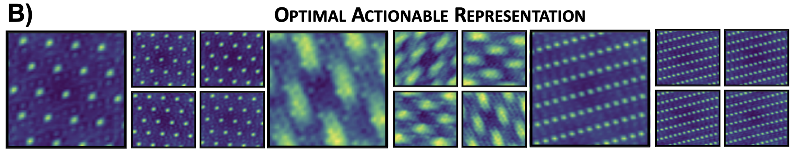
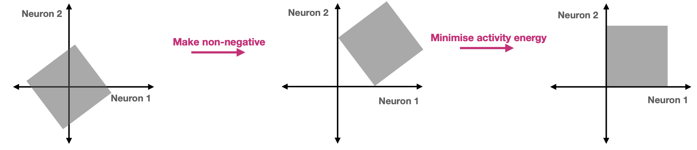
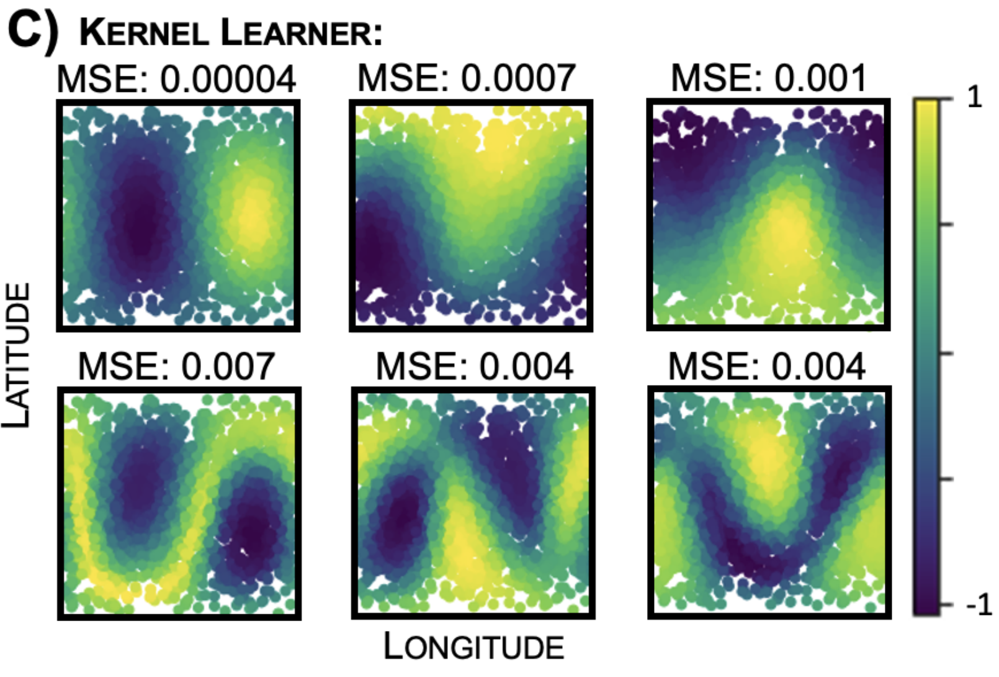
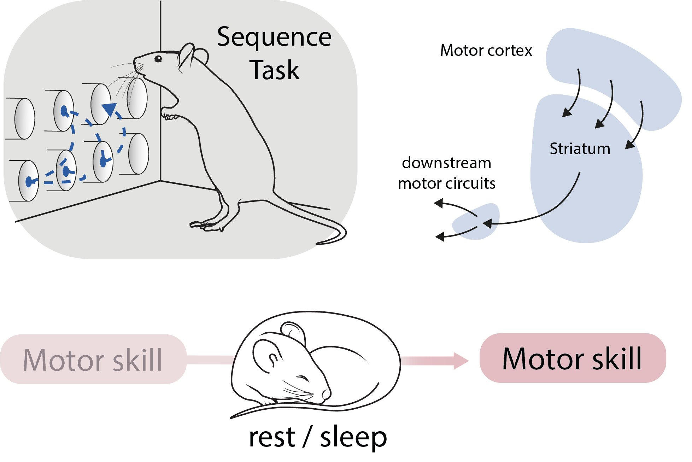

The Efficient Computing Hypothesis
I've helped out on projects a few different areas of neuroscience, machine learning, and phyiscs, but the area of work I'm most passionate about (addicted to, obsessed with, consumed by) is normative theories of brain function. The Efficient Computing Hypothesis was the (grand & wanky) title of my PhD thesis, which was all about building mathematical theories that predict the behaviour of neurons in your cortex as they perform different algorithms.
That's a lot of words, I gave a talk for non-specialists on it at my PhD defence (attack!) which you can watch here (my talk is the second half, only 30mins (15 on double speed!) - the first half is my friend Tom giving a really cute talk about his scientific trajectory), and the introduction of my thesis gives a brief introduction to the ideas.
There's a famous quote, 'Nothing in Biology makes sense except in the light of evolution'. Why do elephants have trunks? Evolution. Why do trees have leaves? Evolution. You get the idea, things are there because they are adaptively selected. This is profound, but maybe not very useful for a neuroscientist on the ground trying to understand how a brain works. Why is that neuron doing this and not that? Evolution... alright but what can I do with that?
What evolution does provide is some sense of a goal - things in biology exist for a reason, they are 'designed'. What we need then is some ideas that links the goal of the system to the measurements we make - e.g. this neuron behaves like that to achieve this function. That is what normative theories try to do. The norm in 'normative theory' is the same as a moral norm, a prescription of what should be the case. We specify what we mean by good, just like evolution does, and then we try and predict how neurons should behave to be good.
This is classic work going back 75 years to the earliest days of neural measurements. They framed a theory called the Efficient Coding Hypothesis. I love this theory, but think it is often rubbish at explaining cortical responses, so we tried to develop a better theory, hence, the Efficient Computing Hypothesis.
My Current Research (Jan 2023)
The major thrust of my thinking at the moment concerns how animals learn and exploit structure in the world.
The world has manifold repeating patterns; from the mundane (things tend to fall unless supported), to the obscure (like a dense mathematical theorem, or musical structures like a fugue). How is it that a completely uninitiated human can, after tuition and effort, come to understand these mathematical or musical structures (among many others), often so well that they can then play creatively with the structure, developing new inventions, elaborations, insights, or analogising between seemingly disparate situations?
Well, finding this structure requires seeing the world in the certain way, a representational question. For example, being able to conceptualise sound as notes on the western musical scale seems a pre-requisite to understanding the fugue's musical structure. You need to know what parts of your stimulus are important for the current situation. Then you need to learn the patterns, and their predictabilities.
Shockingly, in a way that has directed a lot of my recent thinking, these same phenomena can be examined in lab mice. The immensly talented Dr. Mohamady El-Gaby, in Prof. Behrens' lab, has trained mice to learn the structure of a task, and there are neural recordings of the implicated brain regions (prefrontal cortex) in mice as they learn the task from complete beginners to experts. This is hella exciting!
Mohamady and gang have worked out how the mice solve the task once they are experts, and it involves the most shocking and beautiful neural representation you could ask for (see here). I am now super interested in thinking about the algorithms at work in discovering the appropriate structural elements, and piecing them together, and using this to try and match the observations all the way down to neural firing rate predictions.
All Scientific Projects
I'm interested in basically anything with structure (hehe), and have done work in condensed matter physics, a few areas of theory for neuroscience, and machine learning. Here's the full run-down with extended descriptions of most below.
Neural Representation Theory
Actionable Neural Representations: A Normative Theory of Grid Cells
TLDR: we use group & representation theory to formalise a good representation of space, and use it to predict grid cells and many of their related phenomena.
I am continually astounded by the beauty of grid cells. First there were place cells, neurons that fire when you are in a particular position in an environment (like the northeast corner of a room), which showed the brain was encoding a meaningful cognitive variable like 2D position, cool, but not beautiful. Then the Mosers and team found grid cells, neurons that fire not in one position in an environment, but in a hexagonal lattice of positions! Further, these grid cells do not choose any arbitrary lattice. No, no. At any one time they come in groups (modules), of which there are maybe about 7 in rats, and all members of the group have lattices that are translated versions of one another; wild!!!
WHY?????
Why does the brain choose to represent information this way? It seems so weird and beautiful!
Building on a decade of theory and experiment, we develop a normative theory for why grid cells are the best representation of position. It asks for three simple things. First, the neurons must encode position faithfully, for example different positions cannot be encoded the same, otherwise you'd get confused about where you are. Second, it must obey biological constraints, which for us mean that neurons have positive firing rates (since a rate of something is positive...) and don't fire too fast.
Thirdly, and more unusually, we ask for our representation to embed the structure of 2D space. This structure is very useful! Lets say you leave your hotel in an unfamiliar city and wander north, then east, then south. Because you know the structure of 2D space, you know you can get home by going west. And rules are true everywhere! Very handy.
We use group and representation theory to work out what a neural representation that embeds this structure in a particular way must look like. We then find the structure-embedding that achieves our other two objectives best and show, numerically and with supporting analytics, that this produces neurons that look like multiple modules of grid cells!
This was a super satisfying and pretty normative theory; it matches and makes experimental predictions for grid cell behaviour, and it hints at broader questions of how the brain encodes structure. Paper here
Biological Constraints Lead to Disentangling: A Theory of Functional Cell Types
TLDR: we show constraints biology places on representations lead to separate neurons representing different variables.
In neuroscience we record neural firing as animals exist. Our challenge is to understand this pattern: why does a neuron fire when it does? And role are these neurons playing in functioning behaviour?
Classic work answers this question by something in the world that correlates with neural firing. Hubel and Weisel won and Nobel Prize for finding visual neurons whose firing was highly correlated to the appearance of an edge in the visual scene. This is great! You can then think of these neurons as edge detectors. How much more interpretable this is! How many more avenues for discovering function suddenly open, just think about edge detecting rather than random neural patterns!
However, at times, this 60-year-old technique has seemed anachronistic. The brain is a complex device processing complex inputs and outputs; why should we ever expect individual neurons to code so cleanly for interpretable things in the world? It just seems naive.
In work led by James Whittington (to which I was just an accessory!) we look at how a population of neurons could best encode some variables. This population is constrained by biology: it can't fire too fast as this is costly, nor are the neurons allowed to have negative firing rates (since rates are positive...). We find that under these constraints in very simple linear problems the solution is for independent variables to be encoded in different populations of neurons. Further, these theoretical results seem to be true in many more complex empirical settings.
This is exciting because it retroactively justifies the old approach! If there are many variables in the world, and our science is realistic, then different neurons should code for each variable; i.e. we should expect to find interpretable correlations between variables in the world and neural firing rates! It also particular neural predictions and relates to machine learning work on disentangled variables. Paper here
Inductive Bias
Meta-Learning any Supervised Learner's Inductive Bias
TLDR: designed a tool to learn tasks that a circuit you're interested in finds easy to learn.
Lets say you're learning a new task from examples, e.g. learning the valence of odours: this odour means food, that one means danger. You receive a few examples and memorise them, but how do you generalise this to odours that aren't quite the same as ones you've already experienced?
Having studied the training set, a learner will guess the valence of new odours according to certain trends; simple things like if an odour is very similar to one you know is food, it is probably also food. The way a learner generalises in this way is called its inductive bias.
These biases are built into the circuit, the way it learns. This allows us to use it as an explanatory window. Perhaps confusing-biological-feature-blah (e.g. an interesting connectivity pattern) is present because it shapes the inductive bias of the network in a helpful way?
We therefore develop a tool that can meta-learn functions a differentiable supervised learner finds easy to learn. These characterise the inductive bias of the learner, and allow biological circuit features to be interpreted normatively!
Read our paper about it here
Understanding Cerebellar Connectivity Patterns through the Inductive Bias
Following on from the previous project, we are using the inductive bias to give a normative role for recently measured connectivity patterns in cerebellar-like patterns. This is exciting, because it is mapping from very low level details (patterns in electron-microscopy measurements of which neuron connect to one another) all the way to the effect on the function of the network, and the tradeoffs any learning circuit must make!
Currently writing up, stay tuned! (And let me know if you have connectivity patterns in supervised learning circuits that you would like interpreted!)
Neural Data Analysis
Unsupervised Decoding of Mouse Dreams
TLDR: adapted a Bayesian spike-sequence detection algorithm to recover the content of mice's thoughts during sleep.
Emmett Thompson in the SWC, with the Stephenson-Jones lab, measured the neural activity of mice as they performed a stereotyped action (like typing your password), and as they slept. We adapted a very nice recent hierarchical Bayesian point-process algorithm, PPSeq, in an effort to spot patterns in the neural data (i.e. every time the mouse leans this way these neurons activate like this), then go find the same patterns in the data while the mouse was sleeping. We found evidence that while the mouse is sleeping the same patterns are replaying, suggesting the mouse might be thinking about the actions it spent all day doing!
Now the experimental team is looking to see what role this replay plays. It could be functional, like if you practice the piano then go to sleep, you'll be better when you wake up. This could be because your brain is replaying the patterns it learned during the day. This can all be tested with fancy optogenetic tools and the like. Expect news soon!
The theory work was a very fun collaboration with Tom George, Clementine Domine, and Rodrigo Carrasco-Davis.
Pre-PhD
TLDR: Analysed olfactory responses to odours in one nostril and used them to build a model of how two hemispheres communicate.
My first foray into theoretical neuroscience, why do we have two nostrils?! I analysed neural from the olfactory cortex as odours were smelt in the nostril on the same or different side, and asked whether they were different. They weren't very, which was a puzzle given the random scrambling that's supposed to happen in the olfactory system, so we build a model to explain this! Paper here, or more description here.
TLDR: adapted some hierarchical RL control algorithms to be bio-plausible.
My project in Okinawa with Sergio Veduzco-Flores, we adapted hierarchical reinforcement learning algorithms to work biologically-plausibly! These are two algorithms controlling an arm type thing: the top one (the manager) says 'get the arm here' and the bottom one (worker) says 'okay boss, moving muscles to get arm here'. The manager learns to choose good instructions so the complete agents succeeds, the worker learns to do what the manager says! Paper here, or more description here.
TLDR: made an acoustic metamaterial mimic of bilayer graphene.
I used to be a condensed matter physicist, interested in understanding the weird ways large collections of atoms start behaving. Often these are funky quantum systems, colder than outer space, carefully isolated from the outside world. But! Surprisingly, many of these interesting phenomena have analogues in much simpler systems. The equations which govern electrons have similarities to those that govern simple waves (e.g. sound), so you can make analogues of weird electronic effects using sound waves. This is (A) cool, (B) allows you to study the same phenomena but at room temperature with nothing more complex than a lattice of iron pillars, a speaker, and a microphone, (C) allows technological transfer, either making better acoustic devices thanks to the last century of condensed matter physics, or using acoustics to rapidly prototype the very fiddly little quantum devices in simple acoustics first, then try them in quantum world!
I developed just such an acoustic mimic of a current system of much interest, van der Waals materials, and their superstar family member (superstar because it superconducts, which is a holy grail of condensed matter physics), magic angle twisted bilayer graphene.